소방설비기사(기계분야) (2012-03-04 기출문제)
1과목: 소방원론
1. 다음 중 피난자의 집중으로 패닉현상이 일어날 우려가 가장 큰 형태는?
- T형
- X형
- Z형
- H형
(정답률: 75%)

2. 할론 45kg 과 함께 기동가스로 질소 2kg을 충전하였다. 이 때 질소가스의 물분율은 약 얼마인가? (단 할론 가스의 분자량은 149이다.)(오류 신고가 접수된 문제입니다. 반드시 정답과 해설을 확인하시기 바랍니다.)
- 0.19
- 0.24
- 0.31
- 0.39
(정답률: 47%)
3. 분자 자체내에 포함하고 있는 산소를 이용하여 연소하는 형태를 무슨 연소라고 하는가?
- 증발연소
- 자기연소
- 분해연소
- 표면연소
(정답률: 72%)
4. 다음 중 연소속도와 가장 관계가 깊은 것은?
- 증발속도
- 환원속도
- 산화속도
- 혼합속도
(정답률: 69%)
5. 일반적인 방폭구조의 종류에 해당하지 않는 것은?
- 내압방폭구조
- 유입방폭구조
- 내화방폭구조
- 안전증방폭구조
(정답률: 56%)
6. 표준상태에서 11.2L 의 기체질량의 22g이었다면 이 기체의 분자량은 얼마인가? (단, 이상기체를 가정한다.)
- 22
- 35
- 44
- 56
(정답률: 72%)
7. 방화벽에 설치하는 출입문의 너비는 얼마 이하로 하여야 하는가?
- 2.0m
- 2.5m
- 3.0m
- 3.5m
(정답률: 75%)
8. 다음 중 착화온도가 가장 낮은 것은?
- 아세톤
- 휘발유
- 이황화탄소
- 벤젠
(정답률: 62%)
9. 상온, 상압상태에서 기체로 존재하는 할로겐화합물 Halon 번호로만 나열된 것은?
- 2402, 1211
- 1211, 1011
- 1301, 1011
- 1301, 1211
(정답률: 60%)
10. 다음 원소 중 수소와의 결합력이 가장 큰 것은?
- F
- Cl
- Br
- I
(정답률: 68%)
11. CO2 소화약제의 장점으로 가장 거리가 먼 것은?
- 한냉지에서도 사용이 가능하다.
- 자체 압력으로도 방사가 가능하다.
- 전기적으로 비전도성이다.
- 인체에 무해하고 GWP가 0이다.
(정답률: 68%)
12. 연소 시 암적색 불꽃의 온도는 약 몇 ℃ 정도인가?
- 700
- 950
- 1100
- 1300
(정답률: 60%)
13. 분말소화약제 중 A급, B급, C급에 모두 사용할 수 있는 것은?
- 제1종 분말
- 제2종 분말
- 제3종 분말
- 제4종 분말
(정답률: 74%)
14. 섭씨 30도는 랭킨(Rankine) 온도로 나타내면 몇 도인가?
- 546도
- 515도
- 498도
- 463도
(정답률: 62%)
15. 연소를 위한 가연물의 조건으로 옳지 않은 것은?
- 산소와 친화력이 크고, 발열량이 클 것
- 열전도율이 작을 것
- 연소시 흡열반응을 할 것
- 활성화 에너지가 작은 것
(정답률: 56%)
16. 프로판 가스의 연소범위(vol%)에 가장 가까운 것은?
- 9.8 ~ 28.4
- 2.5 ~ 81
- 4.0 ~ 75
- 2.1 ~ 9.5
(정답률: 59%)
17. 다음 분말소화약제의 열분해 반응식에서 ( )안에 알맞은 화학식은?
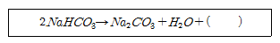
- CO
- CO2
- Na
- Na2
(정답률: 71%)
18. 화재의 분류방법 중 유류화재를 나타내는 것은?
- A급화재
- B급화재
- C급화재
- D급화재
(정답률: 75%)
19. 포소화설비의 주된 소화작용은?
- 질식작용
- 희석작용
- 유화작용
- 촉매작용
(정답률: 70%)
20. 연기농도에서 감광계수 0.1[m-1]은 어떤 현상을 의미하는가?
- 출화실에서 연기가 분출될 때의 연기농도
- 화재 최성기의 연기 농도
- 연기감지기가 작동하는 정도의 농도
- 거의 앞이 보이지 않을 정도의 농도
(정답률: 68%)
2과목: 소방유체역학
21. 다음과 같은 수조에 1.0m×0.3m 크기의 사각 수문을 통하여 유출되는 유량은 m2/s 인가?(오류 신고가 접수된 문제입니다. 반드시 정답과 해설을 확인하시기 바랍니다.)
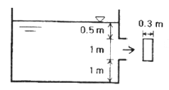
- 1.32
- 2.33
- 3.13
- 4.43
(정답률: 53%)
22. 압력 200kPa 온도 60℃ 공기 1kg이 이상적인 폴리트로픽 과정으로 압축되어 압력 2 MPa, 온도 250℃ 로 변화하였을 때, 이 과정 동안의 일의 양은 약 몇 kJ 인가? (단, 기체상수는 0.287kJ/kgㆍK 이다.)
- 224
- 228
- 232
- 236
(정답률: 25%)
23. 물이 아래 그림과 같이 수평 벤츄리관을 통과하고 있다. B단면의 면적이 A, C의 1/4 이라고 하면 연속방정식과 에너지 보존 법칙을 고려할 때 어느 것이 맞는가?
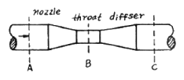
- B에서 압력이 증가한다.
- B에서 유속이 감소한다.
- B에서 압력 에너지가 감소한다.
- B에서 운동 에너지가 감소한다.
(정답률: 52%)
24. 다음의 펌프 운전 특성에 관한 설명 중 옳지 않은 것은?
- 원심 펌프를 가동할 때는 송출구 쪽의 밸브를 잠근 상태에서 시동을 한 후에 밸브를 열어가는 방법을 쓴다.
- 축류 펌프를 가동할때는 입출구 쪽의 모든 밸브를 연상태에서 시동을 하여야 한다.
- 원심 펌프의 가동시 양정이 부족하면 2대의 펌프로 병렬 연합 운전하여 부족한 양정을 보완할 수 있다.
- 축류 펌프의 가동익을 적용하는 경우에는 송출량이나 양정에 따라 날개의 각도를 조정할 수 있으므로 축동력을 일정하게 유지할 수 있다.
(정답률: 63%)
25. 유체에서의 압력을 P, 유량을 Q라고 했을 때, 압력 x체적 유량 (P, X, Q)과 같은 차원을 갖는 물리량은?
- 부력(buoyancy force)
- 일(work)
- 동력(power)
- 표면장력(surface tension)
(정답률: 58%)
26. 한 변이 8cm인 정육면체를 물에 담그니 6cm가 잠겼다. 이 정육면체를 비중이 1.26인 글리세린에 수직방향으로 눌러 완전히 잠기게 하는데 필요한 힘은 약 몇 N 인가?
- 2.56
- 5.12
- 6.33
- 12.6
(정답률: 29%)
27. 온도 80℃인 고체표면을 40℃의 공기로 강제 대류 열전달에 의해서 냉각한다. 대류 열전달 계수를 20W/m2ㆍK라고 할 때 고체표면의 열유속은 W/m2인가?
- 785
- 790
- 795
- 800
(정답률: 56%)
28. 다음 설명 중 맞는 것은?
- 에너지선은 항상 수력 기울기선 아래에 있다.
- 질량과 속도의 곱을 운동량이라 한다.
- 베르누이 방정식은 질량보존의 법칙을 나타낸다.
- 레이놀즈수의 물리적 의미는 점성력과 표면장력의 비를 나타내는 것이다.
(정답률: 40%)
29. 그림에서 1m×3m의 사각 평판이 수면과 45° 기울어져 물에 잠겨 있다. 한쪽 면에 작용하는 유체력의 크기(F)와 작용점의 위치(yf)는 각각 얼마인가?
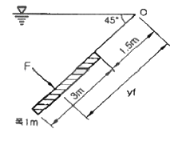
- F = 62.4 kN, kf = 2.38 m
- F = 62.4 kN, kf = 3.25 m
- F = 88.2 kN, kf = 3.25 m
- F = 132.3 kN, kf = 4.67 m
(정답률: 55%)
30. 안지름 1mm의 모세관을 표면장력 0.075N/m의 물속에 세울 때 물이 올라가는 높이는 약 몇 mm인가?
- 10
- 30
- 50
- 80
(정답률: 54%)
31. Newton의 점성법칙을 틀리게 설명한 것은?
- 전단응력은 점성계수와 속도기울기의 곱이다.
- 전단응력은 속도기울기에 비례한다.
- 속도기울기가 0인 곳에서 전단응력은 0이다.
- 전단응력은 점성계수에 반비례한다.
(정답률: 51%)
32. 유적선 (path line)에 대한 설명으로 맞는 것은?
- 유선으로 이루어진 군을 말한다.
- 일정한 시간 내에 유체입자가 흘러간 궤적을 말한다.
- 유체의 내부에 한 폐곡선을 생각하여 이 위의 각점을 지나는 유선으로 1개의 관을 만들 때 이 관을 말한다.
- 각 점에 대한 접선이 그 점에서의 속도벡터의 방향과 일치하는 곡선을 말한다.
(정답률: 50%)
33. 어떤 기체 1 kg이 압력 50 kPa, 체적 2.0m2의 상태에서 압력 1000kPa, 체적 0.2m3 변화하였다. 이때 내부에너지의 변화가 없다고 하면 엔탈피(enthalpy)의 증가량은 몇 KJ인가?
- 100
- 115
- 120
- 0
(정답률: 44%)
34. 직경이 10cm인 원관속에 비중이 0.85인 기름이 0.01m3/s의 비율로 흐르고 있다. 이 기름의 동점성계수가 1.0×10-4 m2/s 일 때 이 흐름의 상태는?
- 층류
- 난류
- 천이구역
- 비정상류
(정답률: 56%)
35. 다음의 (ㄱ), (ㄴ)에 알맞은 것은?
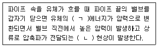
- 운동, 서징(surging)
- 운동, 수격작용(water hammerimg)
- 위치, 서징(surging)
- 위치, 수격작용(water hammerimg)
(정답률: 74%)
36. 측정되는 압에 의하여 생기는 금속의 탄성변형을 기계식으로 확대 지시하여 유체의 압력을 재는 계기는 무엇인가?
- 기압계 (barometer)
- 미노미터(manometer)
- 시차액주계(differential mamometer)
- 부르돈(Bourdon) 압력계
(정답률: 68%)
37. 카르노 사이클로 작동하는 열기관이 800K의 고온 열원과 300K의 저온 열원 사이에서 작동할 때 이 열기관의 효율은?
- 37.5%
- 50%
- 62.5%
- 66.7%
(정답률: 49%)
38. 펌프의 출구와 입구에서 높이 차이와 속도 차이는 매우 작고 압력 차이는 △P 일 때, 비중량 r인 액체를 체적유량 Q로 송출하기 위하여 필요한 펌프의 최소 동력은?
- rQ△P
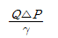
- Q△P
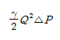
(정답률: 46%)
39. 그림과 같이 안지름 10cm, 바깥지름 18cm인 매끈한 동심 2중관(annular pipe)에 물이 가득 차 흐르고 있다. 동심관에 흐르는 물의 평균 유속이 1m/s라 하면 길이 100m에 대하여 손실수두는 약 몇 m인가? (단, 동점성계수 v=10-6m2/s, 관마찰계수 f=0.0188 이다.)
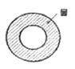
- 1.2
- 2.4
- 5.2
- 4.8
(정답률: 49%)
40. 그림과 같은 큰 탱크에 연결된 길이 100 m, 직경 20cm인 원관에 부차적 손실계수가 5인 밸브 A가 부착되어 있다. 탱크 수면으로부터 관 출구까지의 전체 손실수두에 가장 가까운 것은? (단, 관 입구에서의 부차적 손실계수는 0.5, 관마찰계수는 0.02 이고 평균속도는 v이다.)
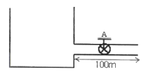
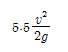
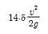
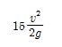
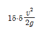
(정답률: 46%)
3과목: 소방관계법규
41. 소방시설의 종류 중 경보설비에 속하지 않는 것은?
- 비화재보방지기
- 자동화재속보설비
- 통합감시시설
- 가스누설경보기
(정답률: 53%)
42. 다음 중 화재가 발생할 경우 피난하기 위하여 사용하는 기구 또는 설비인 피난설비에 속하지 않는 것은?
- 완강기
- 인공소생기
- 피난유도선
- 연소방지설비
(정답률: 52%)
43. 제4류 위험물의 지정수량을 나타낸 것으로 잘못된 것은?
- 특수인화물 - 50리터
- 알코올류 - 400리터
- 동식물유류 - 1000리터
- 제4석유류 - 6000리터
(정답률: 56%)
44. 하자보수의 이행보증과 관련하여 소방시설공사업을 등록한 공사업자가 금융기관에 예치하여야 하는 하자보수 보증금은 소방시설공사금액의 얼마 이상으로 하여야 하는가?
- 100분의 1 이상
- 100분의 2 이상
- 100분의 3 이상
- 100분의 5 이상
(정답률: 52%)
45. 방화관리대상물의 관계인은 소방훈련과 교육을 실시한 때에는 관련 규정에 의하여 그 실시결과를 소방훈련 교육실시 결과기록부에 기재하고 이를 몇 년간 보관하여야 하는가?
- 1년
- 2년
- 3년
- 5년
(정답률: 66%)
46. 보일러 등의 위치ㆍ구조 및 관리와 화재예방을 위하여 불의 사용에 있어서 지켜야 하는 사항으로 잘못된 것은?
- 보일러와 벽ㆍ천장 사이의 거리는 0.5미터 이상 되도록 하여야 한다.
- 가연성 벽ㆍ바닥 또는 천장과 접촉하는 증기기관 또는 연통의 부분은 규조토ㆍ석면 등 난연성 단열재로 덮어씌어야 한다.
- 기체연료를 사용하는 경우 보일러가 설치된 장소에는 가스누설경보기를 설치하여야 한다.
- 경유ㆍ등유 등 액체연료를 사용하는 경우 연료탱크는 보일러 본체로부터 수평거리 1미터 이상의 간격을 두어 설치하여야 한다.
(정답률: 56%)
47. 특정소방대상물에 설치하는 소방시설 등의 유지ㆍ관리 등에 있어 대통령령 또는 화재안전기준의 변경으로 그 기준이 강화되는 경우 변경전의 대통령령 또는 화재안전기준이 적용되지 않고 강화된 기준이 적용되는 것은?
- 자동화재속보설비
- 옥내소화전설비
- 간이스프링클러설비
- 옥외소화전설비
(정답률: 62%)
48. 다음 ( )안에 들어갈 숫자로 알맞은 것은?
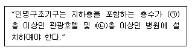
- ㉠ 11, ㉡ 7
- ㉠ 7, ㉡ 7
- ㉠ 7, ㉡ 5
- ㉠ 5, ㉡ 5
(정답률: 62%)
49. 의용소방대의 설치 및 의용소방대원의 처우 등에 대한 설명으로 틀린 것은?
- 소방본부장 또는 소방서장은 소방업무를 보조하게 하기 위하여 특별시ㆍ광역시ㆍ시ㆍ읍ㆍ면에 의용소방대를 둔다.
- 의용소방대원이 운영과 처우 등에 대한 경비는 그 대원의 임면권자가 부담한다.
- 의용소방대원이 소방업무 및 소방 관련 교육ㆍ훈련을 수행하였을 때에는 시ㆍ도의 조례로 정하는 바에 따라 수당을 지급한다.
- 의용소방대원이 소방업무 및 소방관련 교육ㆍ훈련으로 인하여 질병에 걸리거나 부상을 입거나 사망한 때에는 행정안전부령이 정하는 바에 따라 보상금을 지급한다.
(정답률: 47%)
50. 위험물 제조소등의 용도를 폐지한 때에는 용도를 폐지한 날부터 며칠 이내에 시ㆍ도지사에게 신고하여야 하는가?
- 7일
- 14일
- 21일
- 30일
(정답률: 54%)
51. 다음 중 위험물별 성질로서 옳지 않은 것은?
- 제1류 : 산화성 고체
- 제2류 : 가연성 고체
- 제4류 : 인화성 액체
- 제6류 : 인화성 고체
(정답률: 72%)
52. 소방공무원으로서 소방검사자의 자격이 없는 사람은?
- 소방설비산업기사 자격을 취득한 사람
- 위험물기능사 자격을 취득한 사람
- 소방시설관리사 자격을 취득한 사람
- 소방안전교육사 자격을 취득한 사람
(정답률: 51%)
53. 위험물안전관리법령상 위험물을 저장하기 위한 저장고 구분에 해당하지 않는 것은?
- 일반저장소
- 이동탱크저장소
- 간이탱크저장소
- 옥외저장소
(정답률: 48%)
54. 방염처리업의 종류에 속하지 않는 것은?
- 섬유류 방염업
- 위험물류 방염업
- 합판ㆍ목재류 방염업
- 합성수지류 방염업
(정답률: 56%)
55. 옥내주유취급소에 있어서 당해 사무소 등의 출입구 및 피난구와 당해 피난구로 통하는 통로ㆍ계단 및 출입구에 설치하여야 하는 피난 설비는?
- 유도등
- 자동식사이렌설비
- 제연설비
- 수동식소화기
(정답률: 67%)
56. 소방대상물의 방염 등에 있어 방염대상물품에 해당되지 않는 것은?
- 목재 책상
- 카페트
- 창문에 설치하는 커텐류
- 전시용 합판
(정답률: 58%)
57. 소방방재청의 중앙소방기술심의위원회의 심의사항에 해당하지 않는 것은?
- 소방시설공사의 하자를 판단하는 기준에 관한 사항
- 소방시설에 하자가 있는지의 판단에 관한 사항
- 소방시설의 설계 및 공사감리의 방법에 관한 사항
- 소방시설의 구조와 원리 등에서 공법이 특수한 설계 및 시공에 관한 사항
(정답률: 54%)
58. 특정소방대상물의 관계인은 그 특정소방대상물에 대한 소방안전관리 업무를 수행하여야 한다. 그 업무에 속하지 않는 것은?
- 피난시설ㆍ방회구획 및 방화시설의 유지ㆍ관리
- 화재에 관한 위험 경보
- 화기취급의 감독
- 소방시설이나 그 밖의 소방 관련 시설의 유지ㆍ관리
(정답률: 49%)
59. 소방기본법령상 특수가연물로서 가연성고체류에 대한 설명으로 틀린 것은?
- 고체로서 인화점이 40℃ 이상 100℃ 미만인 것
- 고체로서 인화점이 100℃ 이상 200℃ 미만이고, 연소열량이 1g 당 8kcal 이상인 것
- 고체로서 인화점이 200℃ 이상이고 연소열량이 1g 당 8kcal 이상인 것으로서 융점이 200℃ 미만인 것
- 1기압과 20℃ 초과 40℃ 이하에서 액상인 것으로서 인화점이 70℃ 이상 200℃ 미만
(정답률: 41%)
60. 소방신호의 종류가 아닌 것은?
- 진화신호
- 발화신호
- 경계신호
- 해제신호
(정답률: 63%)
4과목: 소방기계시설의 구조 및 원리
61. 연결살수설비 전용헤드의 경우 소방대상물의 각 부분으로부터 하나의 헤드까지 수평거리는?
- 2.3m 이하
- 2.5m 이하
- 3.2m 이하
- 3.7m 이하
(정답률: 64%)
62. 다음은 할로겐화합물 소화설비의 수동기동장치 점검내용이다. 이 중 가장 잘못된 것은?
- 방호구역마다 설치되어 있는가?
- 방출지연용 비상스위치가 설치되어 있는가?
- 화재감지기와 연동되어 있는가?
- 조작부는 바닥으로부터 0.8m 이상 1.5m 이하의 위치에 설치되어 있는가?
(정답률: 57%)
63. 다음 중 스프링클러소화설비의 배관에 설치되는 행가에 대한 설명으로 잘못된 것은?
- 가지배관에는 헤드의 설치지점 사이마다 1개 이상의 행가를 설치
- 가지배관에서 상향식 헤드의 경우 헤드와 행가 사이에 8cm 이상 간격을 둘 것
- 가지배관에서 헤드간의 간격이 3.5m를 초과하는 경우에는 3.5m 이내에서 행가를 1개 이상 설치
- 교차배관에는 가지배관 사이의 거리가 4.5m를 초과하는 경우 3.5m 이내에서 행가를 1개 이상 설치
(정답률: 60%)
64. 부촉매효과로 연쇄반응억제가 뛰어나서 소화력이 우수하지만, CFC 계열의 오존층 파괴물질로 현재 사용이 제한을 하는 소화약제를 이용한 소화설비는?
- 이산화탄소소화설비
- 할로겐화합물소화설비
- 분말소화설비
- 포소화설비
(정답률: 80%)
65. 분말소화설비의 화재안전기준상 제1종 분말을 사용한 전역방출방식의 분말 소화설비에 있어서 방호구역 체적1m3에 대한 소화약제는 몇 kg 인가?
- 0.60
- 0.35
- 0.24
- 0.72
(정답률: 60%)
66. 다음 중 수동식소화기의 사용방법으로 맞는 것은?
- 소화기는 안전장치를 푸는 동작을 제외하는 경우에 1동작 이내로 방사할 수 있어야 한다.
- 바람이 불 때는 바람이 불어오는 방향으로 방사하여 한다.
- 불길의 윗 부분에 약제를 방출하고 가까이에서 전방으로 향하여 방사한다.
- 개방되어 있는 실내에서는 질식의 우려가 있으므로 사용하지 않는다.
(정답률: 73%)
67. 스프링클러설비에 있어서 정방형으로 배치하는 경우 헤드에서 헤드까지의 설치거리를 산출하는 식으로 옳은 것은? (단, r : 수평거리이다.)
- s = rcos45°
- s = 2rcos45°
- s=r√45
- s=2r√2
(정답률: 74%)
68. 스프링클러 헤드에 있어서의 용어를 설명한 것이다. 내용이 적합하지 않은 것은?
- “방수압력” 이라 함은 정류통에 의하여 측정한 방수시의 정압을 말한다.
- “퓨지블링크” 라 함은 감열체중 이융성 급속으로 융착되거나 이융성물질에 의해 조립된 것을 말한다.
- “유리벌브” 라 함은 유리구안에 액체나 기체 등을 넣어 밀봉한 것을 말한다.
- “스프링클러헤드” 라 함은 화재시의 가압된 물이 내품어져 분산됨으로서 소화기능을 하는 헤드를 말한다.
(정답률: 60%)
69. 물분무소화설비에서 압력수조를 이용한 가압송수장치의 압력수조에 설치하여야 되는 것이 아닌 것은?
- 수위계
- 급기관
- 수동식 에어콤프레샤
- 맨홀
(정답률: 70%)
70. 이산화탄소 소화설비의 기동장치에 대한 내용 중 맞는 것은?
- 자동식 기동장치는 자동화재 탐지설비의 감지기의 작동과 꼭 연동할 필요 없다.
- 전역방출 방식에 있어서 수동식 기동장치는 저장용기실에 조작이 편하도록 설치한다.
- 가스압력시 자동기동장치의 기동용 가스용기 용적은 0.6ℓ 이상이어야 한다.
- 수동식 기동장치의 부근에는 방출지연을 위한 비상 스위치를 설치한다.
(정답률: 58%)
71. 연결송수관 설비의 방수구 설치기준에 관련된 사항이다. 적절하지 않는 항목은?
- 10층 이상의 층에는 쌍구형으로 설치하여야 한다.
- 호스 접결구는 바닥으로 부터 높이 0.5m 이상 1m 이하의 위치에 설치하여야 한다.
- 구경이 65mm의 것을 하여야 한다.
- 방수구는 개폐기능을 가진 것이어야 한다.
(정답률: 62%)
72. 바닥면적이 180 제곱미터인 호스릴 방식의 포소화설비를 설치한 건축물 내부에 호스접결구가 2개이고, 약제농도 3%형을 사용할 때 포약제의 최소 필요량은 몇 ℓ인가?
- 720
- 350
- 270
- 180
(정답률: 40%)
73. 주차장에 설치하는 포소화 설비에 있어서 포헤드의 설치 배관방식 중 가장 바르게 된 것은? (단,
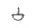
표시는 홀 헤드, EL은 엘보우, T는 티이를 가르킨다.)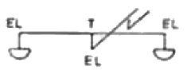
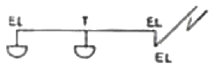
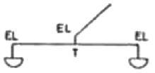
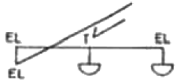
(정답률: 62%)
74. 현재 국내 및 국제적으로 적용되고 있는 청정약제(clean agent) 소화설비 중 약제의 저장 용기내에서 저장상태가 기체상태의 압축가스인 약제는?
- IG 541
- HCFC Blend A
- HFC-227ea
- HFC-23
(정답률: 67%)
75. 상수도 소화용수설비 설치 대상물은 지상에 노출된 가스시설 저장용량의 합계가 몇 ton 이상이어야 하는가?
- 10 ton
- 50 ton
- 60 ton
- 100 ton
(정답률: 50%)
76. 이산화탄소 소화설비, 할로겐화합물 소화설비 등의 가스계 소화설비와 분말소화설비의 국소방출방식에 대한 설명 중 옳은 것은?
- 고정된 분사헤드에서 특정 방호대상물에 직접 소화약제를 분사하는 방식이다.
- 내화구조등의 벽 등으로 구획된 방호대상물로서 고정합 분사헤드에서 공간 전체로 소화약제를 분사하는 방식이다.
- 호스 선단에 부착된 노즐을 이동하여 방호대상물에 직접 소화약제를 분사하는 방식이다.
- 소화약제 용기 노즐 등을 운반기구에 적재하고 방호대상물에 직접 소화약제를 분사하는 방식이다.
(정답률: 57%)
77. 상수도 소화용수설비의 소화전은 구경이 얼마 이상인 상수도용 배관에 접속하여야 하는가?
- 50mm
- 65mm
- 75mm
- 100mm
(정답률: 54%)
78. 소화기구에 적용되는 능력단위에 대한 설명이다. 맞지 않는 항목은?
- 소화기구의 소화능력을 나타내는 수치이다.
- 화재종류(A급, B급 등)별로 구분하여 표시된다.
- 소화기구의 적용기준은 소방대상물의 소요 능력단위 이상의 수량을 적용하여야 한다.
- 간이소화용구에는 적용되지 않는다.
(정답률: 76%)
79. 다음 중 옥외소화전을 설치하여야 하는 특정소방대상물은?
- 1개층의 바닥면적이 3000m2인 지상 15층의 특정소방대상물
- 1개층의 바닥면적이 3000m2(1개의 건축물기준)인 지상 3개층의 특정소방대상물이, 동일구내에 연소우려가 있는 구조로, 2개 건축(2개의 특정소방대상물)
- 1개층의 바닥면적이 1000m2(1개의 건축물기준)인 지상 3개층의 특정소방대상물이, 동일구내에 연소우려가 있는 구조로, 2개 건축(2개의 특정소방대상물)
- 1개층의 바닥면적이 3000m2인 지상 30층의 특정소방대상물이 무창층으로 건축
(정답률: 55%)
80. 연결송수관 설비에 대하여 틀린 것은?
- 연결송수관설비는 소방대원들이 각 층에서 소화작업을 하게 되는 소화활동설비이다.
- 하나의 건축물에 설치된 각 수직배관이 중간에 개폐밸브가 설치되지 아니한 배관으로 상호 연결되어 있을 때, 건축물마다 1개의 송수구를 설치할 수 있다.
- 주배관에서 구경은 100mm 이상으로 하고 지면으로부터 높이가 31m 이상인 소방대상물에서는 습식으로 한다.
- 아파트가 아닌 11층 이상의 건축물에 방수구가 1개소가 설치된 층에는 방수구를 단구형으로 할 수 있다.
(정답률: 63%)